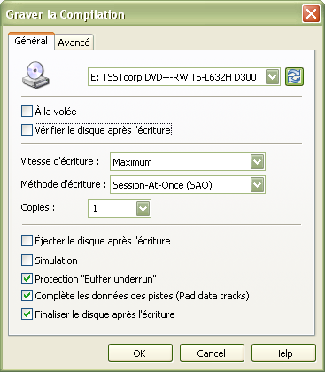

Cette section concerne les options de gravure qui peuvent être appelées de plusieurs endroit dans InfraRecorder. Par exemple, lorsque vous souhaitez votre propre compilation, une image disque ou faire une copie d'un disque.
Bien que ces options soient accessibles dans différents contextes, l'interface se présente toujours de la même manière :

Paramètres généraux
A la volée
Lorsqu'on grave à la volée, tout le système de fichiers sera généré au moment de la gravure, ce qui peut augmenter le risque d'erreur d'écriture. Si cette option est invalidée, une image temporaire du disque sera générée sur le disque dur, puis enregistrée sur le disque à graver. Par défaut, cette option est invalide. Elle ne devrait être validé que si vous manquez d'espace sur votre disque dur.
Vérifier le disque après écriture
En validant cette option, InfraRecorder effectuera une comparaison CRC entre les fichiers sources sur votre disque dur, et les fichiers cibles qui se trouvent sur le disque qui vient d'être gravé afin de s'assurer qu'aucune erreur d'écriture ne s'est produite sur le disque.
Vitesse d'écriture
Sélectionne la vitesse de gravure sur le disque. En sélectionnant l'option Maximum, la vitesse la plus haute supportée par le disque ou la graveur sera utilisée.
Méthode d'écriture
Cette option sélectionne la méthode d'écriture utilisée lors de la gravure du disque. Seules les méthodes supportées par votre graveur seront listées.
Session-At-Once (SAO) appelé aussi Disc-At-Once (DAO) , cette méthode écrit toutes les données (lead-in et lead-out inclus) en une seule passe. Sans autoriser aucune interruption dans le flux de données. Aucune session ou données ne peuvent être ajoutées ultérieurement sur le disque. Notez que les DVD doivent obligatoirement être gravés suivant cette méthode.
Track-At-Once (TAO) écrit chaque piste indépendemment ce qui requiert des blocs de lien entre deux pistes. Les anciens graveurs créent souvent une pause de deux secondes entre les piste (appelé pregap) alors que les graveurs les plus récents autorisent un ajustement de la durée du pregap (voir l'option décrite plus bas).
TAO pregap zéro utilise la méthode Track-At-Once décrite plus haut en essayant de définir une durée de pregap à zéro en réduisant au maximum le nombre de blocs de lien entre deux pistes.
Ecriture directe (raw96r) écrit les données brutes en utilisant des secteurs de 2352 octets plus 96 octets du sous canal P-W créant ainsi des secteur de 2448 octets. Il s'agit de la méthode la plus courante d'écriture en direct car le contrôle de l'écriture sur le CD est bien plus fiable.
Ecriture directe (raw16) écrit les données brutes en utilisant des secteurs de 2352 octets plus 16 octets du sous canal P-Q créant ainsi des secteur de 2368 octets. Cette méthode sera utilisé si un graveur ne supporte pas l'écriture directe (raw96r). Cette méthode d'écriture ne prendra pas en charge les CD-Text.
Ecriture directe (raw96p) écrit les données brutes en utilisant des secteurs de 2352 octets plus 96 octets du sous canal P-W créant ainsi des secteur de 2448 octets. Cette méthode est à éviter dans la mesure où peu de graveurs la supportent, et beaucoup de ces graveurs ont des bogues dans leur firmware. N'utilisez pas cette méthode sir votre graveur supporte l'écriture directe raw96r ou raw16.
Important: Notez que l'écriture directe a un besoin de puissance processeur bien plus important que pour les autres méthodes. Si votre processeur est très lent, vous pouvez rencontrer des problèmes perte de mémoire tampon lors de la gravure.
Autres options
La validation de l'option Simulation va faire en sorte que Infrarecorder va effectuer les opérations demandés mais avec le laser du graveur éteint. Cette option est recommendé si vous souhaitez vous assurer que la gravure du projet se déroulera correctement ou pas.
Protection "Buffer underrun" est une focntionnalité présente sur les graveurs les plus récents qui autorise la poursuite de la gravure même si la mémoire tampon du graveur se vide complètement. Cette fonctionnalité peut avoir des noms différents suivant les marques d'équipement avec par exemple: Yamaha Lossless-Link, Sanyo BURN-Proof, Ricoh Just-Link, etc. Le nom le plus communément rencontré pour cette fonctionnalité est BURN-Proof.
Si l'option Complète les données des pistes (Pad data tracks) est validé, 15 secteurs nulls seront écrit après chaque piste de données ou audio. Cette option sera utilisé dans le cas ou votre lecteur as des difficultés à lire les derniers secteurs d'une piste. Cette option est aussi utile dans le cas ou vous souhaitez utiliser le disque avec un système de fichier Linux ISO-9660 contenant un bogue dit "read ahead".
Si vous invalidez l'option Finaliser le disque après écriture, la dernière session (si vous utilisez le mode SAO) ou la dernière piste (dans le cas d'un mode TAO) ne sera pas fermée. Ceci peut s'avérer utile si vous souhaitez graver un CD en plusieurs étapes.
Important: La création d'un disque non finalisé ne correspond pas à la création d'un disque multi-session.
Paramètres avancés
L'option Autoriser l'overburning permet de graver au dela de la taille officielle du média. Le fait est que la plupart des médias vierges peuvent supporter plus que leur taille officielle, car la zone allouée au "lead-out" est de 90 secondes (soit 6750 secteurs), et qu'un disque fonctionne avec seulement 150 secteurs affectés au "lead-out". Les médias peuvent ainsi être surchargés d'au moins 88 secondes (6600 secteurs). Le majorité des graveur ne supporte l'overburning qu'en mode d'écriture SAO ou raw. Certains graveur ne vous autorisent pas non plus de surcharger le disque comme vous le souhaiteriez, et peuvent limiter la taille du disque. Ce problème peut cependant être contourné en gravant en mode raw, car dans ce cas, le graveur n'a aucune chance de connaître la taille du disque avant le lancement de la gravure.
Lorsque l'option Echanger l'ordre des octets audio est validée, cela suppose que l'ordre des octets est inversé (little endian). Certains modèle de graveurs de Yamaha ou Sony par exemple ainsi que les graveurs utilisant les nouvelles interfaces SCSI-3/MMC on besoin d'un mode d'adressage des données audio de type little-endian, alors que les autres ont besoin que les données audio soit de type big-endian (réseau) normalement utiliser par le protocole SCSI. L'ordre d'adressage des données audio sera automatiquement détecté. La seule condition qui nécessite de valider cette option sera dans le cas d'un flux de données Intel (little-endian).
Ignorer la taille du média peut être validée si vous souhaitez passez outre la taille connue du média. Cette option doit être utilisée avec précaution. Cette option implique un overburning.
L'option Positionner le drapeau "SCSI IMMED" va imposer un retour immédiat d'une commande SCSI pendant que l'action se déroule en arrière plan. Le bus SCSI sera ainsi disponible pour les autres périphériques qui s'y trouvent, ce qui évitera au système de se figer si le graveur ne répond pas immédiatement. Ceci peut être utile sur des vieux systèmes utilisant un disque dur ATAPI et un graveur sur le même bus, ou sur un système SCSI qui ne supporte pas le mode connecté/déconnecté. Ces systèmes se figerons lors de l'effacement ou la cloture d'un disque, ou lors du remplissage de la session avec la quantité mini de données. Notez que tous les graveurs supportent le drapeau IMMED.
Yamaha Audio Master Q. R. est une fonctionnalité qui permet de créer des disques audio de haute qualité avec moins de problèmes de lecture dans les platines CD de salon. Sa mise en oeuvre est une variante du mode d'écriture SAO, c'est pourquoi vous n'aurez accès à cette option seulement si vous avez sélectionné le mode d'écriture session-at-once. Cette option ne fonctionne pas à toutes les vitesses de gravure, et n'autorise la même quantité de donnée qu'en mode standard à cause du fait que le sillon de gravure sera élargi. Si cette option est validé, un CD de 74 minutes verra sa capacité réduite à 63 minutes et un CD de 80 minutes descendra à 68 minutes. Cette fonctionnalité fonctionne également avec les disques de données.
L'option Forcespeed mode force le graveur à utiliser la vitesse sélectionnée sans se soucier de la qualité du média. Normallement, le graveur est sensé connaître la vitesse de gravure maxi autorisée en fonction du média, et peut réduire la vitesse pour assurer la meilleure qualité de gravure. Utilisez cette option avec précaution et en connaissance de cause, car habituellement, le graveur sait très bien quel média peut être gravé à pleine vitesse.
L'option Plextor VariRec write mode autorise à l'utilisateur un léger ajustement de la puissance du laser. Si cette option est configuré correctement, cela peut réduire le jitter, ce qui donnera une meilleure qualité sonore, et diminuera les risques d'incompatibilité avec votre lecteur de salon. VariRec ne fonctionnne que si la vtesse de gravure est définie x4.